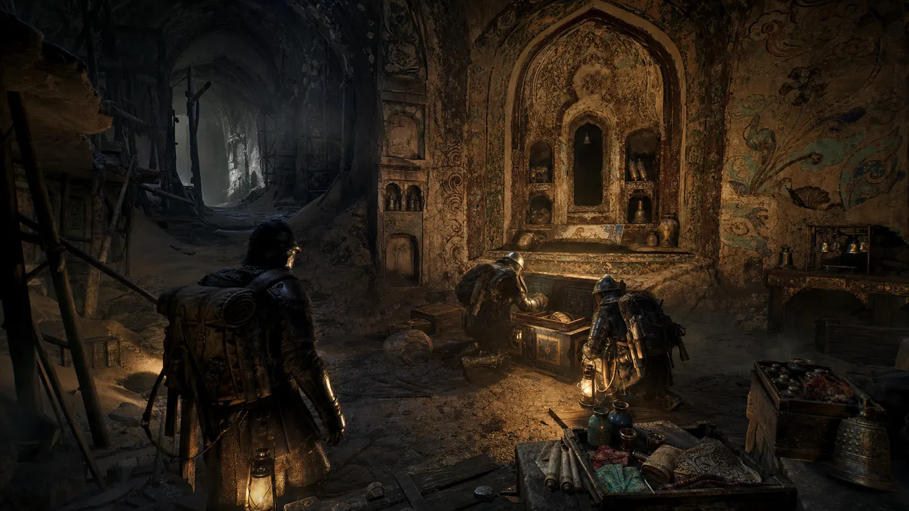
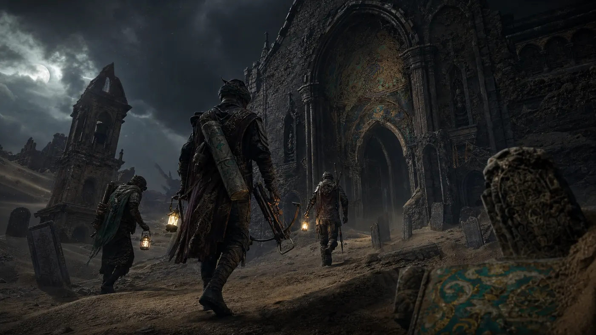

搜：拓印与盗藏
玩家在墓穴、石窟和商队残骸中寻找残卷、矿物颜料、丝绸碎片和铜铃。 拓印壁画会暴露位置，却能开启隐藏密室。
世界观钩子
一支失踪商队把敦煌方向的残卷、壁画拓片、铜铃和石青颜料带入西方边境。 教会称其为异端，炼金会称其为永生之钥，佣兵只知道它们足够值钱。 当修道院地下被挖穿，石窟、墓穴和黑沙暴开始重叠。
核心循环
玩家在墓穴、石窟和商队残骸中寻找残卷、矿物颜料、丝绸碎片和铜铃。 拓印壁画会暴露位置，却能开启隐藏密室。
地下空间同时存在 PvE 异变敌人与其他搜刮小队。 火光、脚步、拓印声和诅咒幻听都会成为战斗信息。
后期黑沙暴封锁普通路线，持有对应残卷的玩家可以激活壁画门。 撤离越晚，收益越高，也越容易死在出口前。

高价值战利品
敦煌元素不只是装饰，而是战利品、钥匙和负面状态的源头。 你可以贪，也可以撤，但每一件遗物都会改变下一分钟的生存压力。
关卡结构
地表入口、钟楼、墓园和回廊构成低价值但高遭遇率区域。
地下墓穴出现莲花、卷草和藻井纹样，隐藏拓印点和残卷箱。
银矿挖穿黑沙裂隙，矿灯、风声和脚印成为追踪线索。
壁画门短时间开启，能安全撤出，也可能成为最后的交火点。
阵营冲突
把残卷视作异端证物，发布净化与回收任务。
用矿物颜料和经卷碎片研究不死术。
试图追回被盗拓片，保护壁画门不再扩散。
只关心标价，愿意收任何能从黑沙里带出的东西。
概念画面
